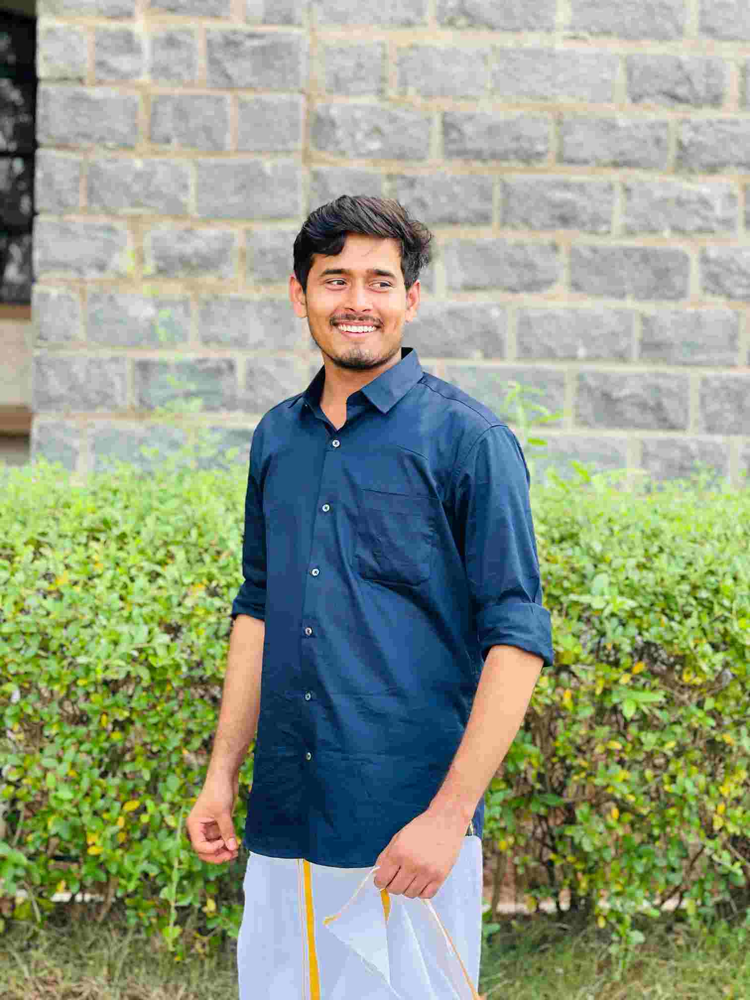

ServiceNow
- Administration & ITSM Modules
- CMDB & Configuration Items
- CI Relationships & Dependency Mapping
- Reports, Dashboards & Workflows
- Users, Groups, Roles & Service Catalog
ServiceNow Certified System Administrator and ITIL-aligned IT Service Management professional with 2 years of experience at Accenture. I build reliable service processes, Power BI dashboards and Power Automate reporting solutions that improve visibility, accuracy and turnaround time.

ServiceNow ITSM Analyst • Power BI • Automation
Open to growth opportunitiesI am a ServiceNow Certified System Administrator and ITIL-aligned IT Service Management professional with experience running Incident, Problem, Change, Service Request and Configuration Management processes.
My work includes ServiceNow administration, CMDB and CI data quality, root cause analysis, SLA governance, stakeholder communication, Power BI dashboards and Power Automate report automation.
I focus on reducing manual effort, improving reporting accuracy and making service-performance information easier for technical teams, business stakeholders and leadership to use.
Service management, platform administration, reporting and automation capabilities developed through enterprise delivery and certification.
ServiceNow CSA
PL-300
Anthropic
Built automated reporting pipelines and dashboards for internal and external audiences, removing repetitive manual work and supporting consistent, on-time delivery of SLA and incident reports.
Created interactive Power BI dashboards visualising ticket volumes, SLA performance, aging and incident trends to give leadership clearer, data-driven service insights.
Maintained configuration items and relationships, reviewed records for completeness, ownership and classification, and linked CIs to incidents, problems and changes for stronger impact analysis.
KS Rangasamy College of Arts and Science, Tamil Nadu | 2024